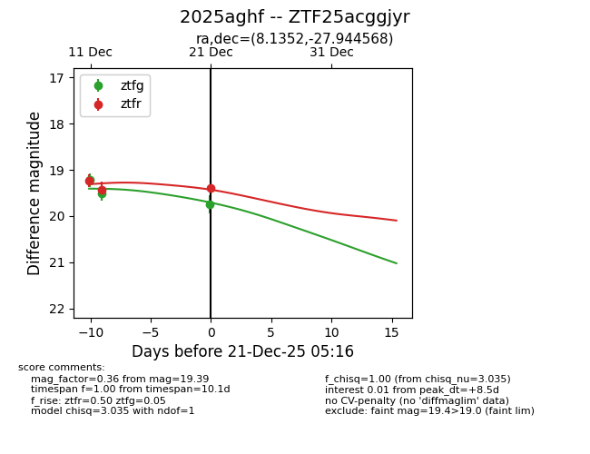
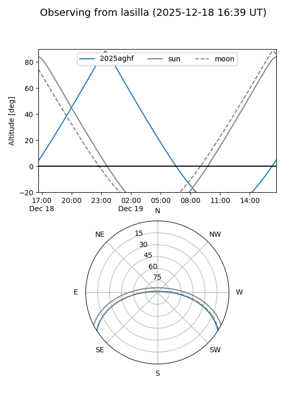
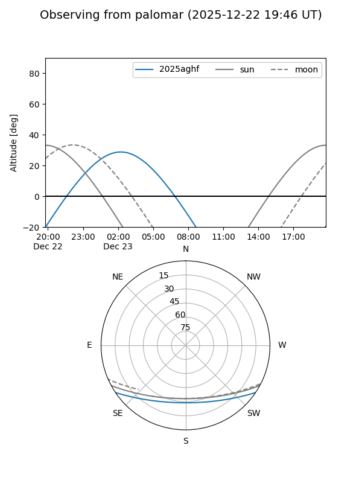

2025aghf
Target 2025aghf at 2025-12-18 11:17
Aliases and brokers:
FINK: fink-portal.org/ZTF25acggjyr
Lasair: lasair-ztf.lsst.ac.uk/objects/ZTF25acggjyr
ALeRCE: alerce.online/object/ZTF25acggjyr
TNS: wis-tns.org/object/2025aghf
YSE: ziggy.ucolick.org/yse/transient_detail/2025aghf
alt names
ZTF25acggjyr (ztf,fink_ztf)
2025aghf (tns,yse)
Coordinates:
equatorial (ra, dec) = 8.1352,-27.94457
equatorial (HMS+DMS) = 00:32:32.46,-27:56:40.44
galactic (l, b) = (20.8186,-85.73245)
Photometry
last ztfg=19.51, ztfr=19.44
2 ztfg, 2 ztfr detections
Lightcurve

Visibility


Additional plots